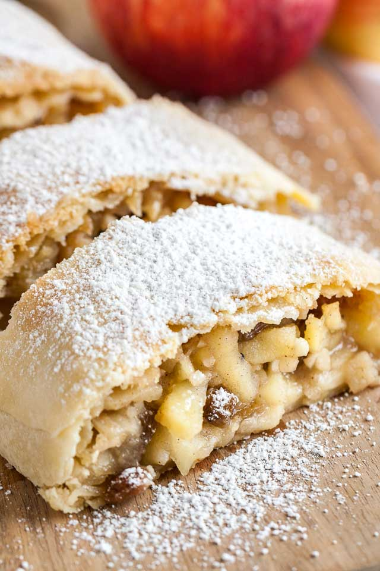

Austrian Apple Strudel

Apple Strudel
Apple strudel is a classic dessert from Eastern Europe. The German word
strudel literally means "whirlpool," and it refers to the technique and
effect of rolling up a generous fruit filling in a paper-thin unleavened
dough. Since landing in Berlin a few weeks ago, I've been sampling apple
strudel whenever I can.
Ingredients
For the Strudel Dough:
- 2 1/2 cups (12 1/2 ounces) all-purpose flour
- 1/2 teaspoon salt
- 3 tablespoons plus 1/2 teaspoon vegetable oil
- 10 to 12 tablespoons lukewarm water
For the Apple Filling:
- 14 tablespoons (7 ounces) unsalted butter, divided
- 2 ounces fresh bread crumbs
- 1/3 cup (1 3/4 ounces) toasted hazelnuts, finely chopped
- 3/4 cup (5 1/4 ounces) plus 1 tablespoon granulated sugar, divided
- 1/4 teaspoon plus 1/8 teaspoon cinnamon
- Pinch salt
- 5 large baking apples such as Golden Delicious, Granny Smith, or
Gala (about 2 pounds), peeled, cored, cut into 1/2 inch cubes
- 1/2 cup raisins
- 5 teaspoons juice and 1 teaspoon zest from 1 to 2 lemons
- For the Strudel Dough: Stir flour, salt, 3 tablespoons oil, and 10 tablespoons water in a large bowl until almost combined and the mixture looks shaggy. If the mixture appears dry, add more water, one tablespoon at a time. You should have a dough that is soft and tacky, but not sticky.
- Place the dough on a lightly floured surface and gently knead until the dough is smooth and elastic, about 5 minutes. Form dough into a ball and lightly coat dough with remaining 1/2 teaspoon oil. Place in bowl, lightly cover, and let rest 1 hour. While dough is resting, start the filling.
- For the Apple Filling: Heat 3 tablespoons butter in a medium skillet over medium-low heat until melted. Add bread crumbs and cook, stirring constantly, until crumbs are moistened and lightly toasted, about 2 minutes. Transfer to a medium bowl and let cool.
- Adjust oven rack to middle position and preheat oven to 425°F (220°C). Place a large sheet of parchment paper on your work surface, then cover the table with a large clean cloth. On a lightly floured cutting board, roll dough into a 10- by 12-inch rectangle. Flip the board and the dough onto the center of the cloth and remove board.
- Working carefully, begin to stretch dough from the center out. This can be achieved by placing your hand, palm down, underneath the dough and gently pulling out to the edge. You can also place your fingertips under the dough to gently stretch. Avoid tearing the dough. If the dough does tear, gently patch together. Stretch the dough until it is a rectangle of approximately 18- by 30-inches and paper thin. The dough should be of even thickness throughout, and thin enough to see through it. Trim off any thick edges with kitchen sheers.
- Melt remaining butter and brush a thin coat over the dough (extra butter will be used to brush on top of the strudel before baking). Sprinkle chopped hazelnuts over dough. Spread bread crumb mixture in a 12-inch strip at the far end of the dough, leaving a border of 6 to 8 inches from the end and 3 inches from both edges.
- Stir 3/4 cup sugar, cinnamon, and salt in large bowl to combine. Mix in apples, raisins, lemon juice, and zest until just combined. Immediately spoon apple mixture on top of the bread crumbs.
- Using the cloth, lift the end of dough over the strudel to cover. Continue to lift the cloth to roll up the strudel. Halfway through, fold the edges in to seal and continue to roll to the end. The strudel should be approximately 16 to 18 inches long. Roll the strudel directly onto the parchment paper, then lift parchment paper with strudel and transfer to a baking sheet. If the strudel doesn't fit perfectly straight onto the pan, gently curve it to fit. Brush with remaining butter and sprinkle with remaining tablespoon sugar.
- Bake for 20 minutes, then reduce oven to 350°F (180°C). Continue to bake until strudel is golden and apples are tender, about 30 minutes more. Transfer pan to wire rack and let cool. Slice and serve with fresh whipped cream or vanilla sauce.